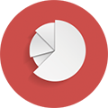

SuperMap GIS
SuperMap GIS SuperMap Software Co., Ltd tomonidan ishlab chiqilgan. Bu ish stoli GIS, xizmat GIS, komponent GIS va mobil GIS platformalari,
shuningdek, fazoviy ma'lumotlarni yaratish, qayta ishlash va boshqarish vositalarini o'z ichiga olgan GIS platformasi uchun to'liq dasturiy ta'minot
to'plami. Uzluksiz texnologik innovatsiyalar, bozor tadqiqotlari va tajriba to'plash orqali SuperMap GIS to'liq nuqtai nazarga ega va kuchli funktsiyalarga
ega bo'lgan yaxshi GIS dasturiy ta'minot brendini yaratdi, bu sanoatning keng doirasi uchun turli talablarga javob bera oladi va u har bir GIS sanoatida
keng qo'llaniladi. Xitoy, ko'plab ikkilamchi rivojlanish kompaniyalarini ilhomlantirmoqda.
Eng so'nggi mahsulotlar

SuperMap GIS 10i AI texnologiyasini to'liq birlashtiradi va GIS
platformasi dasturiy ta'minoti uchun "BitCC" beshta asosiy texnologiya
tizimini o'rnatadi. U katta ma'lumotlar GIS, AI GIS, yangi 3D GIS,
Cloud Native GIS va o'zaro platforma GISni o'z ichiga oladi, ular GIS
nazariyasi va texnologiyasini sezilarli darajada yaxshilaydi va turli
sohalar uchun geo-intellektni boyitadi.
Yuqori texnologiyali
